We placed 2nd at Cal Hacks 13.0
How four McGill students built a way to talk without making a sound, in 36 hours.
Contents
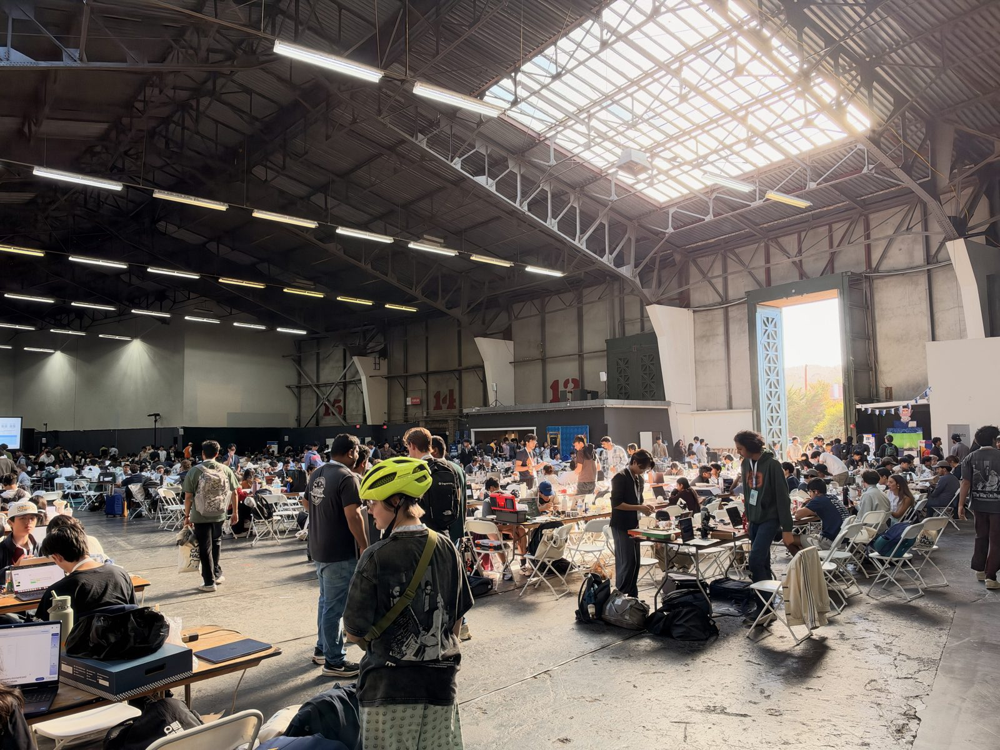
It all started with the acceptance emails. I got into Cal Hacks first, and Evan and Austin got in too, but I didn't know either of them yet.
Then Frank got in and asked me to join his team. I was already halfway into forming a team with two friends of mine from McGill, but I'm way closer with Frank and we just vibe so well, so I told them I had to go with him (don't worry, we're still on good terms).
Frank and I only met a few months ago at Toronto Tech Week through Project Atlas, and since then we've hung out in Toronto, then New York, and now San Francisco, so we basically completed a streak :D
Fast forward 36 hours, and out of 1,917 hackers and 652 projects, the four of us walked out with 2nd overall and 1st in Cartesia's voice AI challenge.
Funny thing is I only came to San Francisco to have fun with Frank, so the winning part still feels like a bonus ngl. At closing ceremony the rest of the team was losing it, and I was lowkey so unfazed lol.
The organizers were super supportive the whole weekend, and the mentors and judges were great too. They got so excited about our project and gave us a bunch of good feedback, and some of them even told us we should take this further as a startup and that they know VCs who could help.
Anyway, this is the long version, what we built, how it works, what broke, and what I'd do again.
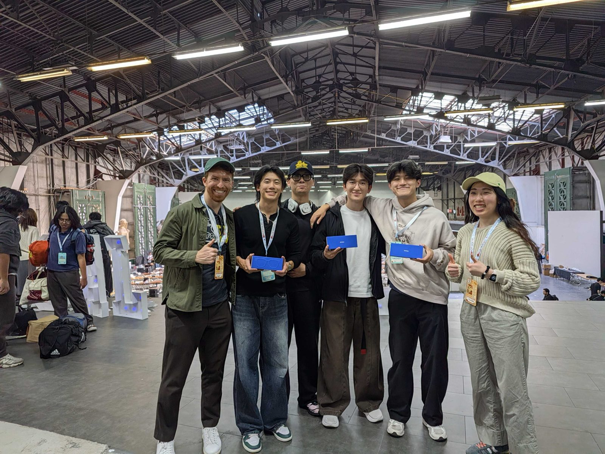
Silent Voice
Silent Voice lets you mouth words without making a sound and be heard in your own voice, even on a phone call.
We built it for people who lost their voice box to a laryngectomy, usually after throat cancer. They keep their lips, tongue, and jaw, so the words are all still there and only the sound is gone. Most of them talk through an electrolarynx, a buzzer held against the neck that sounds robotic and ties up a hand, and we thought they deserved a voice that sounds like them.
Our demo was a real phone call. Austin, our demo speaker, called a judge standing right in front of our table, the judge talked normally, and Austin only mouthed his side. The judge heard him on the phone, in his own cloned voice, while his lips were still moving.
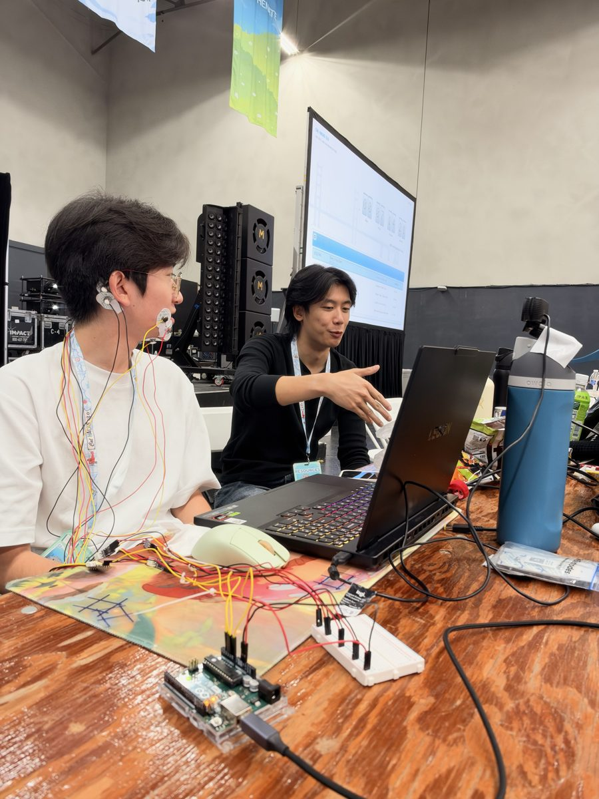
How it works
No single sensor reads silent speech well enough on its own, so we used three readers that each see something the others can't.
- A camera reads the lips. It does most of the work, but a lot of sounds look identical on the lips, like "bat", "mat", and "pat", and the tongue is invisible to it.
- Four pairs of pads read the face muscles. The pad under the chin picks up the muscles that move the tongue, which is exactly what the camera can't see.
- Claude reads the conversation. If the judge just asked about medicine, "pills" beats "bills" even though they look the same on the lips.
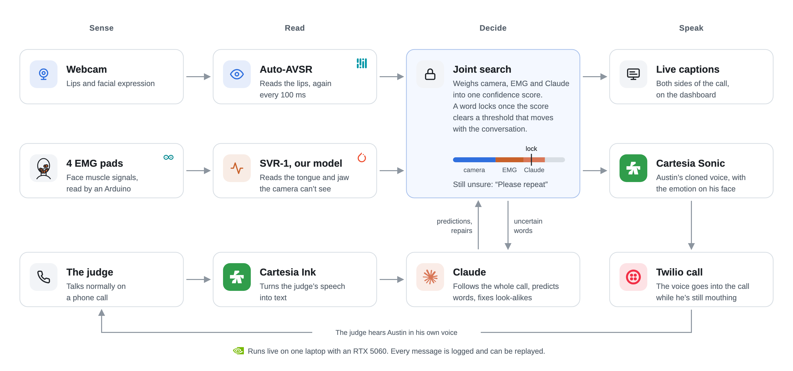
Every 100 ms, one joint search combines all three readers and locks a word in once they're confident enough together. A locked word turns from grey to black on screen and goes straight to the voice. Claude can never lock a word by itself, and when nobody's sure, the screen says "Please repeat" instead of guessing.
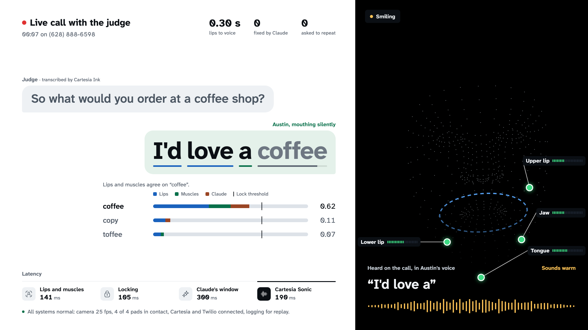
Making a lip reader live
This part is Evan's. The lip reader he built on, Auto-AVSR, was made to read finished clips, which is why lip-reading apps make you finish your sentence and then wait. Evan kept the model and changed how we use it, so every 100 ms it gets everything since Austin started the sentence and reads the whole thing again. Each pass sees a bit more and earlier guesses get firmer, and on a laptop GPU a re-read only costs tens of milliseconds.
He also trained a small face adapter on Austin's own recordings, so the reader got used to how Austin in particular moves his lips.
The muscle model
The muscle side is SVR-1, the one model we trained ourselves, and it's all Austin. It's a 45M-parameter Transformer that turns the raw signal from the four pads into about 86 frames a second, and every frame gets to look at the rest of the sentence, since whether a burst of muscle activity is an "m" or a "b" depends on what comes around it.
Austin pre-trained it on 19 hours of Berkeley's silent speech recordings, cut down to our four pad sites and run through our own hum filter, then fine-tuned it on his own sessions. His best trick was training it to settle look-alikes, so for every sentence it learns to pick the true one over copies with lip look-alikes swapped in, like "grab the mat" over "grab the bat". On Berkeley's test set, SVR-1 picks the right sentence out of 10 look-alikes 72.3% of the time, against 27.7% for Berkeley's own released model on the same four sites.
Austin built the joint search on top of it too, along with its language model, which learned from 72 million words of everyday dialogue instead of audiobooks, so it expects the way people actually talk on a call.
The voice
The voice is Frank's part, along with the Twilio call, the live captions, and the dashboard he built from my Figma design. Cartesia Sonic speaks each word as soon as it locks, so Austin is heard while he's still mouthing. The words go out as natural phrases, at his pauses or every four words or so, because a word sent alone gets read like its own tiny sentence. Austin's face sets the emotion, and how fast and how hard he mouths sets the speed and the volume.
How we worked
Everything we built, we built with Claude.
It started with brainstorming. We dug through articles and papers on voice AI and silent speech, and the best ones came out of Berkeley (shout out to them), including the 2020 paper our pad sites come from.
Frank and Evan kept pushing for crazier, more ambitious ideas, because we started from what would make the judges go WOW and worked our way backward. I was the "sane" voice, pushing back on what was technically feasible, what we could actually guarantee in 36 hours, and how to split the work. Austin, our ML goat, was the compromise in between.
So we were pushing right at the edge, and not everything came out 100% perfect. The voice isn't technically real time, for example, since it lands about a second behind Austin on average. But hey, we had 36 hours, so we worked with what we got.
For the setup, I blocked everyone from pushing straight to main, so every change had to be a PR, and every PR got reviewed by me or by Claude Code running my code review skill.
What I worked on
I'm the only computer engineering major on the team, so I took the hardware and the Claude side, and I played PM for everything else, from shaping the vision to designing the dashboard in Figma and getting the pitch right.
The rig
The rig starts with the EMG pads, four pairs on Austin's face that pick up his muscle signals. They feed four amplifier boards on a breadboard and an Arduino Uno, which reads each channel 1,000 times a second and sends the raw numbers to the laptop over USB. Claude laid out the breadboard with me, wrote the firmware and the serial reader, and helped me pick pad sites from Berkeley's 2020 silent speech paper, so our signals would look like the data we pre-train on.
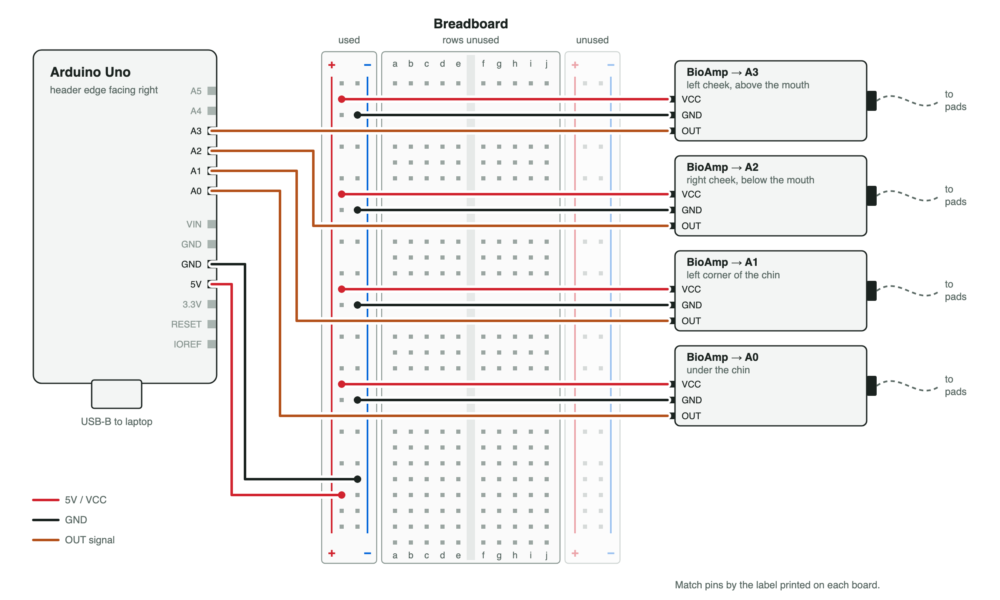
We started with six channels and cut to four. There wasn't room for clean contact on Austin's face and hair behind his ears kept loosening the reference pads, and a noisy channel hurts the model more than a missing one.
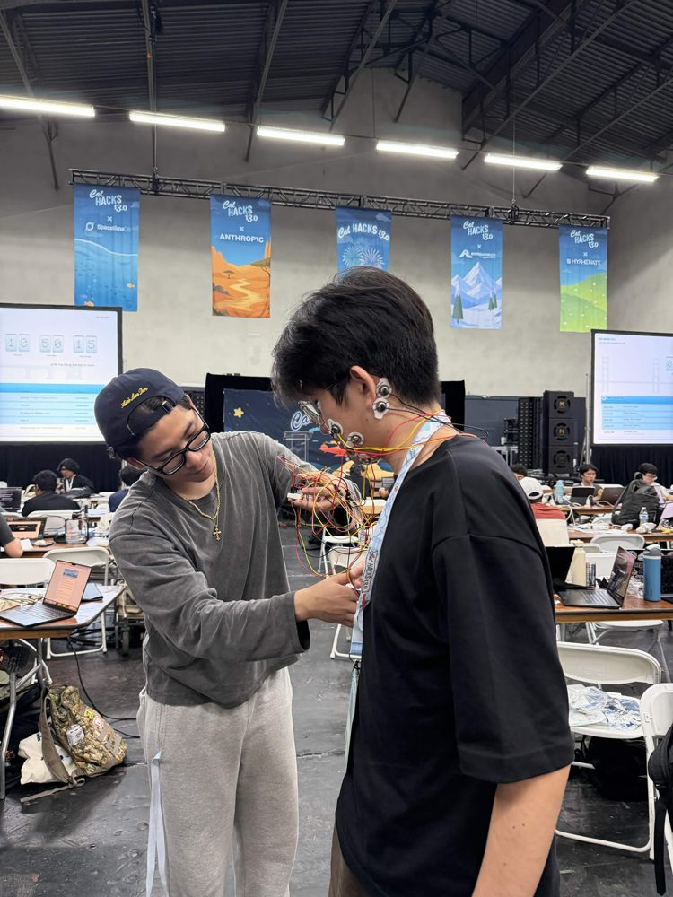
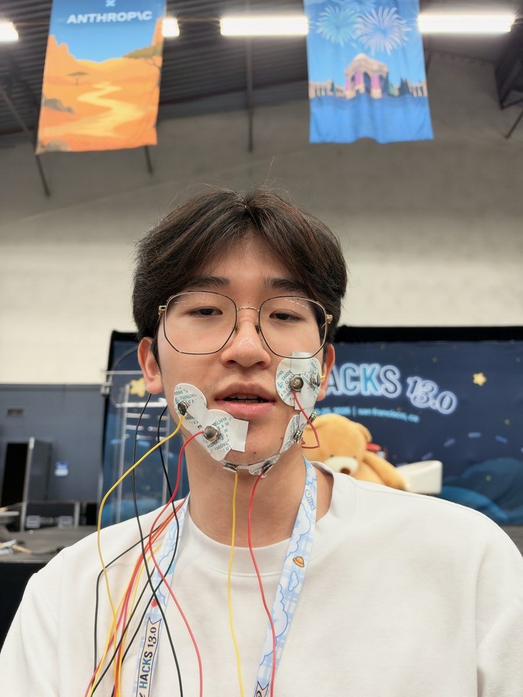
One rule had no exception. The pads connect Austin's face to the laptop through the Uno, and we didn't have a USB isolator, so the laptop stayed off its charger whenever the pads were on his skin.
Claude
Claude predicts what Austin will say before he mouths it, starting while the judge is still talking, and fixes look-alike words in the captions afterwards. It only ever picks between words the camera and the pads already proposed, so it can't put ideas in Austin's mouth.
What broke
The voice was too slow at first. With Cartesia's default buffer, 14 of 15 words waited for the sentence to end on our test calls, so a judge would have sat through 4.9 s of nothing. Frank fixed it by streaming phrases with no buffer, and now the first sound lands 0.6 s after Austin starts and he's done 1.0 s after he stops.
Our first model choice was too slow too. Claude never sits between Austin's lips and the voice, it works beside the loop, guessing his next words while the judge is still talking. That only helps if the guess is ready before Austin starts mouthing, and Claude Opus took 5.7 to 6.9 s a call, so its guesses showed up after he'd already said the words. We timed every option on live calls and moved predictions to Haiku with thinking off, at about 2 to 3 s, and kept Opus for the caption fixes, since those never touch the voice. So the voice's delay of about a second comes from locking words and streaming them to Cartesia, not from waiting on Claude.
Next time I'd try Jev. It's TypeSafe AI's classifier, and on LiteLLM's benchmark it answered in about 127 ms against about 690 ms for Claude Haiku, fast enough to settle look-alikes like "bills" and "pills" inside the 100 ms loop, so the hard words could reach the voice sooner. To test it, I'd replay our logged calls with Jev picking between the readers' look-alikes, then compare how fast those words lock and how often they're right. The catch is it only picks from a fixed list, so Claude stays for guessing what Austin says next.
The expo floor was loud. The judge's side of the call goes through Cartesia Ink, which turns their speech into text for Claude and the captions. It's great at hearing everyone, which is a problem when everyone is the crowd behind the judge. On test calls the judge came in at -20 to -12 dBFS and the crowd at -60 to -40, so we gate the call audio around the caller's own level.
The venue hummed. The room's wiring puts a 60 Hz hum on everything, so we filter it out live, one sample at a time. Training runs the exact same filter, so the model never sees cleaner data than it gets on stage.
Fun times
It was my first time in San Francisco and my first hackathon outside Montreal. We rode Lime scooters everywhere, slept way less than we should have, and won on top of it.
Oh, and I also got admitted to the ER lol. Around 1am the fatigue and abdominal pain caught up with me, and next thing I know I'm on IV fluids and getting my first ever dose of fentanyl (prescribed). I pulled back up to the venue around 8am, which was so clutch, because MLH rules say every team member has to be there for judging. I literally larped too hard, died, and came back.
This whole trip felt like a movie, and I still can't believe all of it happened in 36 hours. Core memory unlocked.
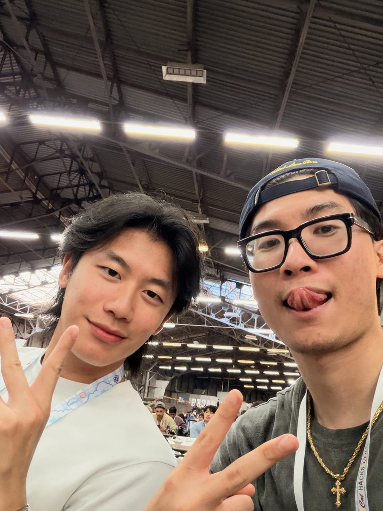
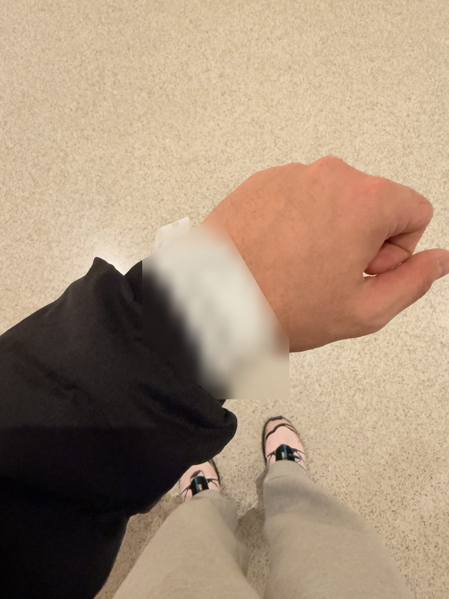
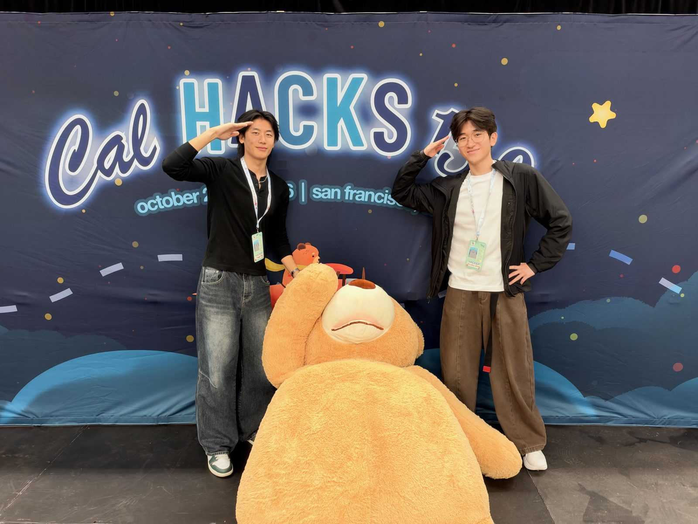
What I'd do again
Pick a problem people feel. Nobody needs a chart to understand what losing your voice means, and the judges got it in one sentence.
Demo something that sounds impossible. A real phone call where the speaker never makes a sound beats any slide we could have made.
Lean on agentic engineering. Get comfortable with plugins, skills, and the rest of your Claude Code setup before the hackathon starts. The less time you spend debugging, the more time goes into the idea itself.
Put the plan in one file. Start with a super ambitious idea, then break it down into a PRD or MVP doc that the whole team agrees on and Claude judges feasible. Everyone runs their own Claude instance, so they'd better all read from the same .md file. That way even pivoting from the plan gets way easier later, because everyone, Claude included, already has the context.
What's next
Like I said, a bunch of judges told us to turn this into a startup. After the hackathon our team linked up with our friend Aditya, an ex-McGillian who dropped out to do YC with Graypass (W26). We talked startups and business for hours, how we could actually turn this into something that gives a voice back to more people who need it, and I walked out so inspired.
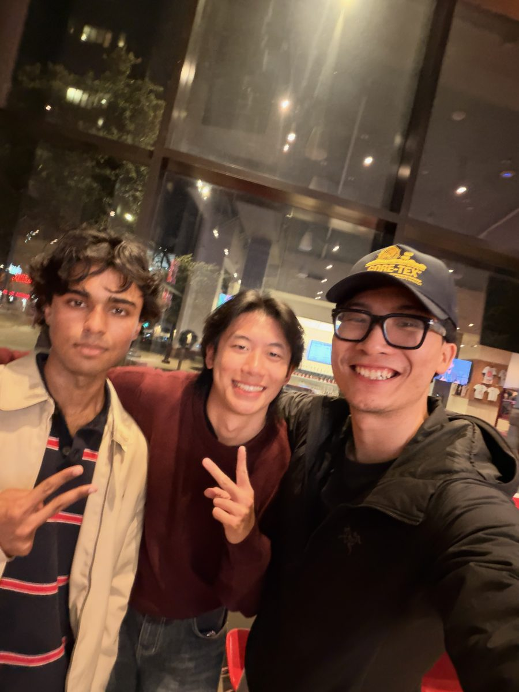
Huge thanks to the Cal Hacks team for putting it all together, the lineup was stacked and the judges and mentors were super supportive.